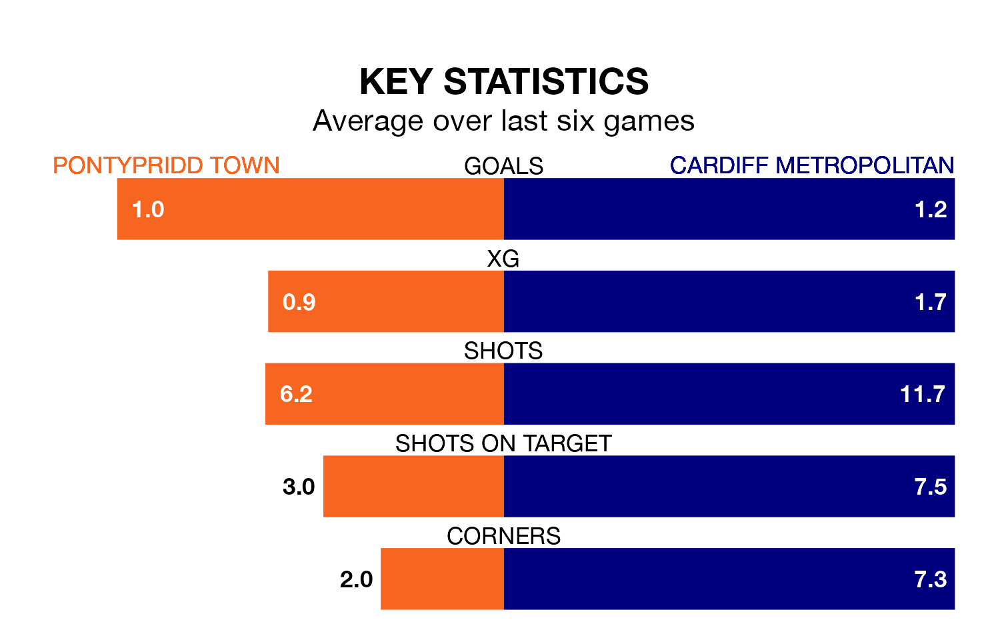

Struggling Pontypridd Town face Cardiff Metropolitan on Sunday looking to build on a win in their last league outing.
After securing all three points with a 1-1 victory over Barry Town United Women on March 10, Pontypridd sit bottom of the Welsh Premier Women's League.
They travel to play a Cardiff Metropolitan side seventh in the standings, who also won their last match, 4-1 against The New Saints Women.
In the last 10 years, Pontypridd and Cardiff Metropolitan have played each other on six occasions. Cardiff Metropolitan won all of them.
On average, Pontypridd scored 0.7 goals and Cardiff Metropolitan 2.3 in those matches.
Their last meeting was on January 10, when Cardiff Metropolitan won 1-0 away.
Pontypridd are in disappointing form in the Welsh Premier Women's League, with one win and two draws from their last six games.
With two wins and a draw over that period, Cardiff Metropolitan's form is slightly better – they have taken seven points from 18, compared to Town's five.
With 10 goals in 15 games so far this season, the home team are the league's lowest scorers with 0.7 goals per game. And they are conceding more than average, letting in 33 goals at a rate of 2.2 per game.
The visitors are also below average scorers, with 1.3 goals per game, compared to a league average of 1.8. They have conceded 2.3 goals per game.
Updated: 15:10 (UTC), 15/03/24